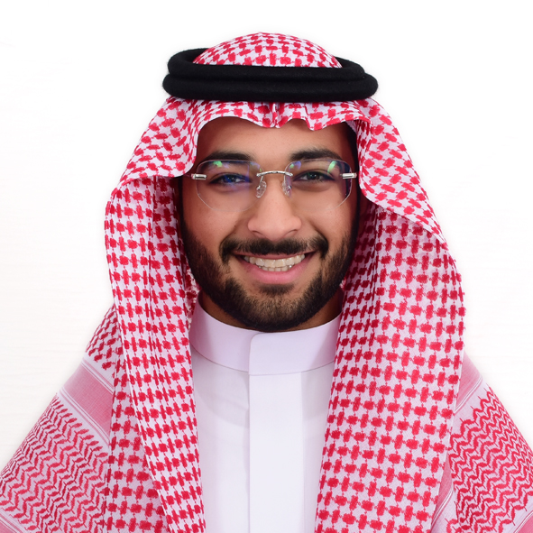
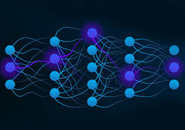

Computer Vision project
Implemented a YOLO object detection model to identify the presence of a shemagh, a traditional Saudi garment, and determine if it is being worn.

Aspiring AI and ML student, Web developer, and much more.
Computer Science student at KFUPM with a strong focus on machine learning and computer vision. Experienced in building and evaluating deep learning models, with particular interest in applied AI research and real-world deployment.
This portfolio is the first step in showcasing my projects, growth, and technical abilities.
Implemented a YOLO object detection model to identify the presence of a shemagh, a traditional Saudi garment, and determine if it is being worn.

Developed a neural network model to accurately predict loan repayment likelihood for applicants.